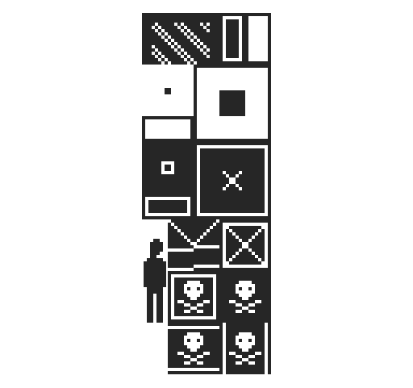

#25 ICM final · runner 0.1
#25 ICM final · runner 0.1 So, I was a bit over exited about this project. My expectations for the final product that I wanted to acomplish were a tiny bit very high.
Which is alright, this series of ideas that I had are going to push this project forward past this stage, therefore I will keep improving it until I get to the desired final product.
This game is still a 2d platformer that has a very retro-style look to it, the first idea was to make it endless, a level that only ended when the user reached game over, that way the main goal would be a high score. this proved to be impossible due to my knowledge of phaser and the complexity of the elements needed to do so, addid to all this the time should be considered to. This brought the final product, at least for the presentation, to a single level game without scoring system.
The road to this was quite bumpy, you start thinking that you only need to follow a series of steps and ajust the parameters to your concept, but this gets problematic really fast. Phaser is the library that I used to create the game, which introduced me to plenty of new concepts and techniques. The first of them was the sprite; a game object if you will, this can have loaded into it a series of diferent characteristics like animations, which i had to create, like shown in the previous blogpost, you can add controls for the player to use this sprite in-game and much other things like colision to the map's elements and others.
The map is an other wall I encountered while building this game. the way you create a map for a phaser game is with what is called "tilemap", a tilemap is a image generated from a tileset, which establishes the tiles that build said map. This process was a nightmare, when using elements created in a separate enviroment, you can encounter compatibility issues that can be very difficult to undertake if you are new to the framework. this meant that I ended up spending the longest hours trying to figure out why wasn't the character staying on the ground and instead falling through it.

A tileset; image used to generate a tilemap.
A spritesheet; image used to generate a animation for a sprite.
I have to admit that this little project tested my stamina. Every solution brought a new problem that needed a soulution, that once reache, brought up a new issue, this was the whole process. It was lots of fun. ¬¬
The path was very rough and I almost lost my pacience, but the result is quite satisfactory, it's not even close to be complete, but the things I've learnt were worth the "suffering".
After playtesting the final result I have to say, that although it not being complete, users seem to enjoy it, and what to get to the finish line, which is tought to get, and still havent seen anyone get there.
try the game yourself here
gP